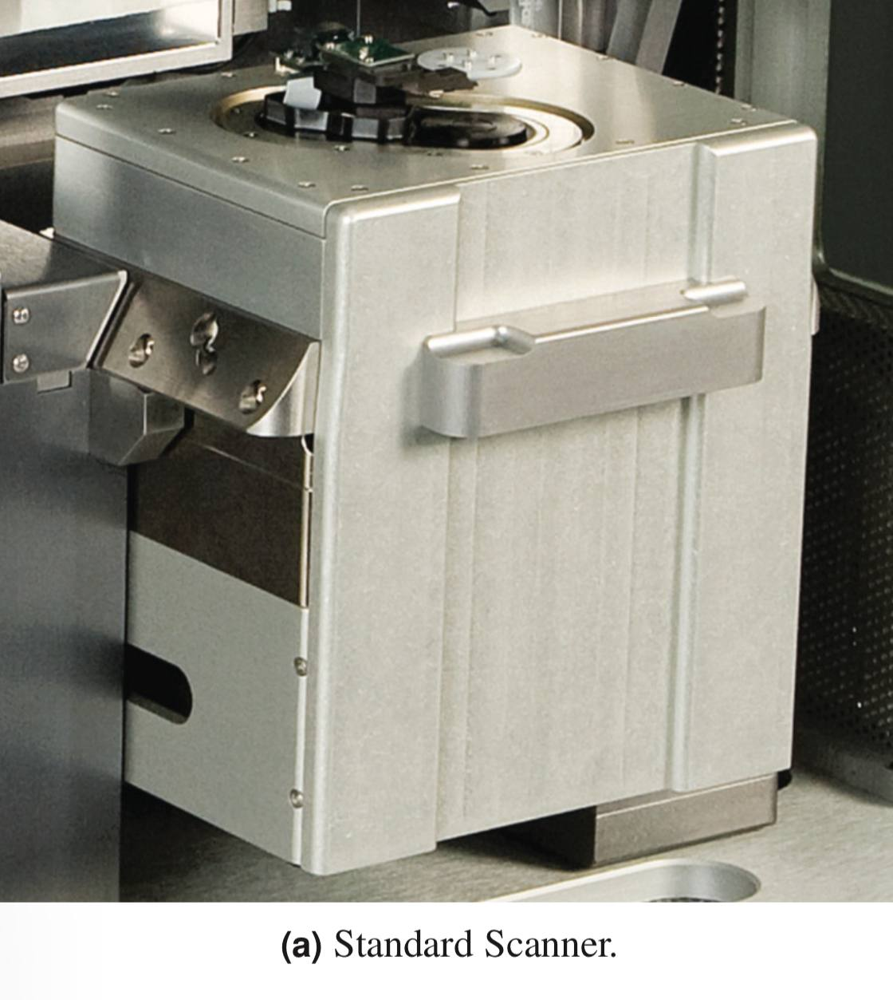

The sample is the object or material we want to study. The probe interacts with the sample's surface, and through this interaction, we can gather information about its topography, properties, and even atomic structures.
Canteliver
The Canteliver of a probe in an AFM microscope acts like a tiny spring. It bends when it interacts with a sample, allowing us to measure the forces between the probe and the surface. When a canteliver interacts with the sample, it experiences tiny forces. These forces causes the canteliver to bend or deflect. The deflection is measured using a laser beam that reflects off the canteliver and unto the detector. By analyzing the changes in the changes in the laser beam, we can determine the forces between the probe and the sample.

Figure 2. Standaed Scanner of the Atomic Force Microscope